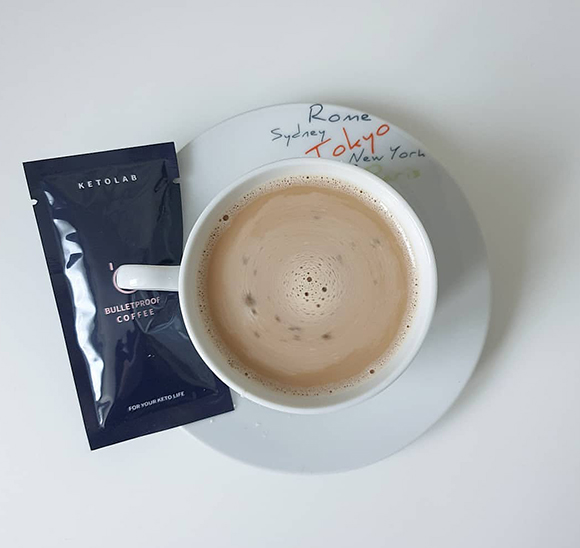
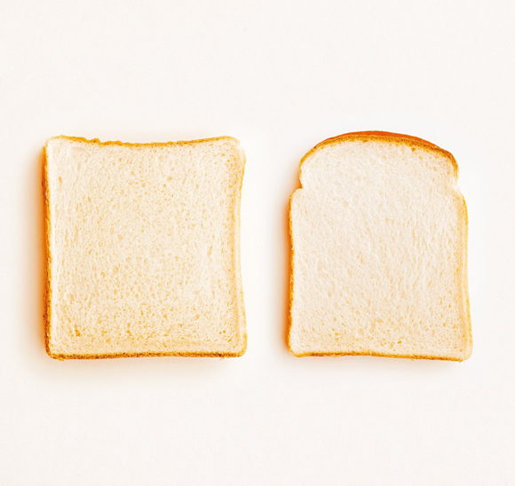
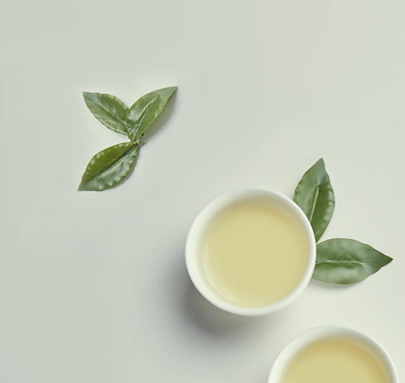
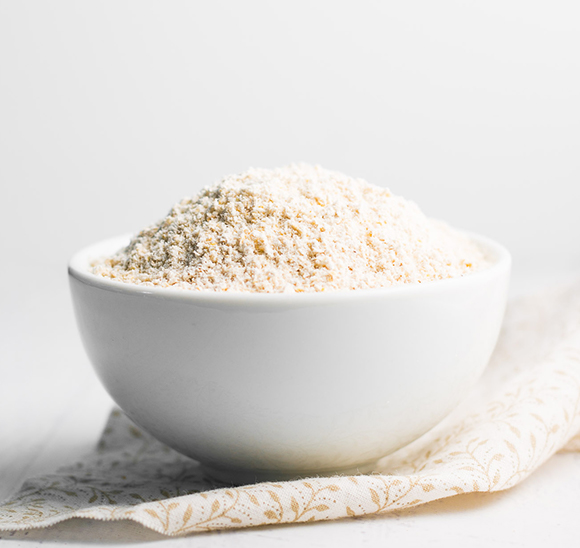

탈취 효과
식품의 섭취 가능 기한을 의미하는 것은 유통기한이 아닌 소비기한입니다.
소비기한이 지나 섭취할 수 없는 식품을 활용하여 탈취 효과를 얻을 수 있습니다.
식품들의 다양한 재활용 방법을 알아보세요.

커피
수육을 할 때 커피 가루를 넣고 끓이면 고기 누린내 제거가 가능합니다.
또, 음식물 쓰레기 위에 커피믹스를 뿌려두면 악취를 제거할 수 있습니다.

식빵
냉장고의 음식 냄새를 제거하기 위해 쿠킹 호일에 식빵을 감싼 후,
이쑤시개나 포크 등으로 쿠킹호일에 구멍 10개 정도를 뚫어줍니다.
냉장고의 한 부분에 놓으면, 탈취제로써 효과를 볼 수 있습니다.

녹차
그릇에 물을 붓고 녹차 티백을 잘 적신 후, 전자레인지에 2분간 가열해줍니다.
전자레인지의 냄새를 잡아줄 뿐만 아니라 마른 수건으로 물기를 닦아주면
기름때 청소도 가능합니다.

밀가루
기름기가 있는 식기나 주방용품에 밀가루를 뿌려두었다가
설거지를하면 기름때를 말끔하게 제거할 수 있습니다.